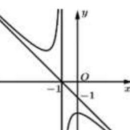
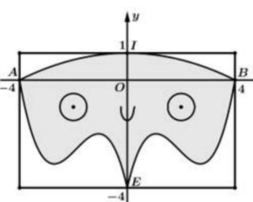

ĐỀ THI TOÁN - ĐỀ SỐ 50 HOT
Phần I: Trắc Nghiệm Nhiều Lựa Chọn
Tóm tắt kiến thức: Dãy số
Số hạng tổng quát \( u_n \) của dãy số được tính bằng công thức. Số hạng đầu tiên là \( u_1 \).
Câu 1:
Cho dãy số \( (u_n) \) có số hạng tổng quát \( u_n = 1 - \frac{n}{n^2 + 1} \) (với \( n \in \mathbb{N}^* \)). Số hạng đầu tiên của dãy là:
Chọn đáp án:
Lời giải:
Ta có: \( u_1 = 1 - \frac{1}{1^2 + 1} = 1 - \frac{1}{2} = \frac{1}{2} \).
Đáp án: D.
Tóm tắt kiến thức: Nguyên hàm
Nguyên hàm của \( \cos x \) là \( \sin x \), của \( x^n \) là \( \frac{x^{n+1}}{n+1} \). Tổng nguyên hàm của các hàm bằng tổng các nguyên hàm riêng.
Câu 2:
Tìm họ nguyên hàm của hàm số \( f(x) = \cos x - 2x \).
Chọn đáp án:
Lời giải:
Ta có: \( \int (\cos x - 2x) \, dx = \int \cos x \, dx - \int 2x \, dx = \sin x - x^2 + C \).
Đáp án: A.
Tóm tắt kiến thức: Phương trình tham số đường thẳng
Đường thẳng qua điểm \( M(x_0; y_0; z_0) \), vectơ chỉ phương \( \vec{a} = (a; b; c) \), có phương trình tham số: \( \left\{ \begin{array}{l} x = x_0 + at \\ y = y_0 + bt \\ z = z_0 + ct \end{array} \right. \).
Câu 3:
Cho đường thẳng \( \Delta \) đi qua điểm \( M(2; 0; -1) \) và vectơ chỉ phương \( \vec{a} = (4; -6; 2) \). Phương trình tham số của đường thẳng \( \Delta \) là:
Chọn đáp án:
Lời giải:
Đường thẳng \( \Delta \) qua \( M(2; 0; -1) \), vectơ chỉ phương \( \vec{a} = (4; -6; 2) \). Phương trình tham số:
\( \left\{ \begin{array}{l} x = 2 + 4t \\ y = 0 - 6t \\ z = -1 + 2t \end{array} \right. \).
Tuy nhiên, kiểm tra đáp án C: \( \vec{a} = (2; -3; 1) \), là bội số của \( (4; -6; 2) \), nên cũng đúng.
Đáp án: C.
Tóm tắt kiến thức: Phương trình logarit
Phương trình \( \log_a b = c \Leftrightarrow b = a^c \). Điều kiện: \( b > 0 \).
Câu 4:
Nghiệm của phương trình \( \log_2 (3^x - 1) = 3 \) là:
Chọn đáp án:
Lời giải:
Điều kiện: \( 3^x - 1 > 0 \Leftrightarrow x > 0 \).
Ta có: \( \log_2 (3^x - 1) = 3 \Leftrightarrow 3^x - 1 = 2^3 \Leftrightarrow 3^x = 9 \Leftrightarrow x = 2 \) (thỏa mãn).
Đáp án: D.
Tóm tắt kiến thức: Tính chất tích phân
\( \int_a^b [f(x) \pm g(x)] \, dx = \int_a^b f(x) \, dx \pm \int_a^b g(x) \, dx \), \( \int_a^b k f(x) \, dx = k \int_a^b f(x) \, dx \).
Câu 5:
Cho \( \int_0^3 f(x) \, dx = 2 \). Tính giá trị của tích phân \( L = \int_0^3 [2 f(x) - x^2] \, dx \).
Chọn đáp án:
Lời giải:
Ta có: \( L = \int_0^3 [2 f(x) - x^2] \, dx = 2 \int_0^3 f(x) \, dx - \int_0^3 x^2 \, dx \).
Với \( \int_0^3 f(x) \, dx = 2 \), ta tính: \( \int_0^3 x^2 \, dx = \left. \frac{x^3}{3} \right|_0^3 = \frac{27}{3} = 9 \).
Do đó: \( L = 2 \cdot 2 - 9 = 4 - 9 = -5 \).
Đáp án: B.
Tóm tắt kiến thức: Logarit
Tính chất: \( \ln (a^b) = b \ln a \), \( \ln (ab) = \ln a + \ln b \).
Câu 6:
Cho \( a, b \) là hai số thực dương thỏa mãn \( a^3 b^5 = e^9 \). Giá trị của \( 3 \ln a + 5 \ln b \) bằng:
Chọn đáp án:
Lời giải:
Ta có: \( a^3 \cdot b^5 = e^9 \Rightarrow \ln (a^3 \cdot b^5) = \ln e^9 \Rightarrow 3 \ln a + 5 \ln b = 9 \).
Đáp án: B.
Tóm tắt kiến thức: Mặt cầu
Mặt cầu \( (x - x_0)^2 + (y - y_0)^2 + (z - z_0)^2 = R^2 \) có tâm \( I(x_0; y_0; z_0) \), bán kính \( R \).
Câu 7:
Trong không gian \( Oxyz \), cho mặt cầu \( (S): (x - 1)^2 + (y - 2)^2 + (z + 1)^2 = 4 \). Tọa độ tâm \( I \) và bán kính \( R \) của mặt cầu \( (S) \) là:
Chọn đáp án:
Lời giải:
Mặt cầu \( (S): (x - 1)^2 + (y - 2)^2 + (z + 1)^2 = 4 \) có tâm \( I(1; 2; -1) \), bán kính \( R = \sqrt{4} = 2 \).
Đáp án: A.
Tóm tắt kiến thức: Thể tích lăng trụ tam giác đều
Thể tích lăng trụ: \( V = S_{\text{đáy}} \cdot h \). Diện tích tam giác đều cạnh \( a \): \( S = \frac{a^2 \sqrt{3}}{4} \).
Câu 8:
Cho khối lăng trụ tam giác đều có tất cả các cạnh bằng \( a \). Thể tích của khối lăng trụ là:
Chọn đáp án:
Lời giải:
Diện tích đáy tam giác đều: \( S = \frac{a^2 \sqrt{3}}{4} \).
Chiều cao lăng trụ (cạnh bên): \( h = a \).
Thể tích: \( V = S \cdot h = \frac{a^2 \sqrt{3}}{4} \cdot a = \frac{a^3 \sqrt{3}}{4} \).
Đáp án: A.
Tóm tắt kiến thức: Tiệm cận đứng
Hàm số \( y = \frac{ax^2 + bx + c}{mx + n} \) có tiệm cận đứng tại \( x = -\frac{n}{m} \) (nếu \( mx + n = 0 \)).
Câu 9:
Cho hàm số \( y = \frac{ax^2 + bx + c}{mx + n} \) có đồ thị như hình vẽ dưới đây. Tiệm cận đứng của đồ thị hàm số là đường thẳng có phương trình:

Chọn đáp án:
Lời giải:
Hàm số \( y = \frac{ax^2 + bx + c}{mx + n} \) có tiệm cận đứng tại \( mx + n = 0 \Rightarrow x = -\frac{n}{m} \).
Từ đáp án D, tiệm cận đứng là \( x = -1 \), phù hợp với dạng hàm số.
Đáp án: D.
Tóm tắt kiến thức: Khoảng tứ phân vị
Khoảng tứ phân vị \( \Delta Q = Q_3 - Q_1 \), với \( Q_1, Q_3 \) là tứ phân vị thứ nhất và thứ ba của mẫu số liệu ghép nhóm.
Câu 10:
Số giờ làm thêm trong một tuần của sinh viên được thống kê trong biểu đồ sau. Khoảng tứ phân vị của mẫu số liệu ghép nhóm cho bởi biểu đồ trên gần nhất với giá trị nào dưới đây?

Chọn đáp án:
Lời giải:
Tổng số liệu: \( n = 12 + 20 + 37 + 21 + 10 = 100 \).
Tứ phân vị thứ nhất: \( Q_1 = \frac{x_{25} + x_{26}}{2} \). Do \( x_{25}, x_{26} \in [4; 6) \), tính: \( Q_1 = 4 + \frac{\frac{100}{4} - 12}{20} \cdot (6 - 4) = 5.3 \).
Tứ phân vị thứ ba: \( Q_3 = \frac{x_{75} + x_{76}}{2} \). Do \( x_{75}, x_{76} \in [8; 10) \), tính: \( Q_3 = 8 + \frac{\frac{100 \cdot 3}{4} - (12 + 20 + 37)}{21} \cdot (10 - 8) = \frac{60}{7} \approx 8.57 \).
Khoảng tứ phân vị: \( \Delta Q = Q_3 - Q_1 = \frac{60}{7} - 5.3 = \frac{229}{70} \approx 3.2 \).
Đáp án: A.
Phần II: Trắc Nghiệm Đúng/Sai
Tóm tắt kiến thức: Hàm số và đạo hàm
Tập xác định: Mẫu khác 0. Cực trị: \( f'(x) = 0 \). Tập giá trị: Dựa vào bảng biến thiên.
Câu 13:
Cho hàm số \( f(x) = \frac{2x - 3}{x^2 + 4} \). Xét các phát biểu sau:
Chọn đáp án cho từng phát biểu:
a)
b)
c)
d)
Lời giải:
a) Đúng. \( x^2 + 4 \neq 0 \), hàm xác định với mọi \( x \in \mathbb{R} \).
b) Đúng. \( f'(x) = \frac{-2x^2 + 6x + 8}{(x^2 + 4)^2} \), \( f'(x) = 0 \Leftrightarrow -2x^2 + 6x + 8 = 0 \Leftrightarrow x = -1, x = 4 \).
c) Đúng. Bảng biến thiên:
| \( x \) | \( -\infty \) | \( -1 \) | \( 4 \) | \( +\infty \) | |
| \( y' \) | \( 0 \) | \( + \) | \( 0 \) | \( - \) | |
| \( y \) | \( 0 \) | \( \frac{1}{4} \) | \( 0 \) |
d) Sai. Tập giá trị: \( \left[-1; \frac{1}{4}\right] \). Với \( a = -1 \), \( b = \frac{1}{4} \), thì \( 3a + 2b = 3(-1) + 2 \cdot \frac{1}{4} = -\frac{5}{2} \neq -2 \).
Đáp án: a) Đúng, b) Đúng, c) Đúng, d) Sai.
Tóm tắt kiến thức: Tích phân và đạo hàm
Tốc độ thay đổi: \( M'(t) \). Số lượng tích lũy: \( M(t) = \int M'(t) \, dt \). Cực trị tại \( t_0 \): \( M'(t_0) = 0 \).
Câu 14:
Nam đang tham gia một bài học từ mới môn Tiếng Anh trong vòng 60 phút. Biết rằng \( M(t) \) là số từ mới mà Nam có thể ghi nhớ trong \( t \) phút. Tốc độ ghi nhớ từ mới của Nam được xác định bởi hàm số \( M'(t) = at - bt^2 \) (với \( a, b \in \mathbb{R} \)) (từ/phút) và đạt cao nhất tại thời điểm 40 phút. Biết rằng Nam có thể ghi nhớ được 18 từ mới trong 10 phút đầu tiên của bài học. Xét các phát biểu sau:
Chọn đáp án cho từng phát biểu:
a)
b)
c)
d)
Lời giải:
Tốc độ cực đại tại \( t = 40 \): \( M'(t) = at - bt^2 \), \( M''(t) = a - 2bt = 0 \Rightarrow t = \frac{a}{2b} = 40 \Rightarrow a = 80b \).
\( M(t) = \int (at - bt^2) \, dt = \frac{a}{2} t^2 - \frac{b}{3} t^3 + C \), với \( M(0) = 0 \Rightarrow C = 0 \).
\( M(10) = 18 \Rightarrow \frac{a}{2} \cdot 10^2 - \frac{b}{3} \cdot 10^3 = 18 \Rightarrow 50a - \frac{1000}{3} b = 18 \).
Thay \( a = 80b \): \( \frac{80b}{2} \cdot 100 - \frac{b}{3} \cdot 1000 = 18 \Rightarrow \frac{11000}{3} b = 18 \Rightarrow b = \frac{27}{5500} \Rightarrow a = \frac{108}{275} \approx 0.39 \).
a) Sai. \( a \approx 0.39 \neq 0.4 \).
b) Sai. \( M'(20) = \frac{108}{275} \cdot 20 - \frac{27}{5500} \cdot 20^2 = \frac{324}{55} \approx 5.9 \neq 6 \).
c) Sai. \( M(60) = \int_0^{60} \left( \frac{108}{275} t - \frac{9}{5500} t^2 \right) \, dt = \frac{3888}{11} \approx 353 \neq 427 \).
d) Sai. Tốc độ trung bình: \( \frac{M(m) - M(n)}{m - n} = \frac{1}{m - n} \int_n^m M'(t) \, dt \), công thức đúng nhưng không phải định nghĩa tốc độ học trung bình.
Đáp án: a) Sai, b) Sai, c) Sai, d) Sai.
Tóm tắt kiến thức: Hình học không gian và quỹ đạo
Mặt phẳng vuông góc với trục: \( y = k \). Khoảng cách từ điểm đến mặt phẳng: \( d = \frac{|ax_0 + by_0 + cz_0 + d|}{\sqrt{a^2 + b^2 + c^2}} \).
Câu 15:
Vệ tinh hoạt động dựa trên nguyên lý vật lý Newton. Quỹ đạo của vệ tinh nằm trên mặt phẳng vuông góc với trục tung và đi qua điểm \( B(4032; 0; -5376) \). Coi Trái Đất là hình cầu hoàn hảo có bán kính 6400 km. Xét các phát biểu sau:
Chọn đáp án cho từng phát biểu:
a)
b)
c)
d)
Lời giải:
a) Sai. Mặt phẳng vuông góc với trục tung có vectơ pháp tuyến \( (0; 1; 0) \), phương trình: \( y = k \). Qua \( B(4032; 0; -5376) \): \( y = 0 \), không phải \( x + z = 0 \).
b) Đúng. Khoảng cách: \( OB = \sqrt{4032^2 + 0^2 + (-5376)^2} = 6720 \). Độ cao: \( 6720 - 6400 = 320 \) km.
c) Sai. Tâm \( I \) nằm trên \( OB \), \( IB = 2 \cdot OB = 13440 \). Tọa độ \( I(-4032; 0; 5376) \), không phải \( (-4032; 0; 5736) \).
d) Sai. Hình chiếu \( H(0; 0; 5120) \), \( KH = 3840 \), \( IH = \sqrt{4032^2 + (5376 - 5120)^2} = 64\sqrt{3985} \), \( NH = 13440 - 64\sqrt{3985} \). Khoảng cách: \( KN_{\text{min}} \approx 10154 \neq 10112 \).
Đáp án: a) Sai, b) Đúng, c) Sai, d) Sai.
Tóm tắt kiến thức: Xác suất
Xác suất toàn phần: \( P(A) = P(B)P(A|B) + P(\bar{B})P(A|\bar{B}) \). Công thức Bayes: \( P(B|A) = \frac{P(B)P(A|B)}{P(A)} \).
Câu 16:
Khi trả lời câu hỏi trong một bài thi trắc nghiệm, học sinh có thể biết đáp án hoặc dự đoán đáp án. Các câu hỏi trắc nghiệm có 4 đáp án nhưng chỉ có 1 đáp án đúng. Giả sử bạn Tuấn có xác suất biết đáp án đúng là 0.6 và xác suất không biết đáp án đúng là 0.4. Trong trường hợp không biết đáp án, Tuấn sẽ dự đoán đáp án đúng bằng cách chọn ngẫu nhiên một trong 4 đáp án của đề thi. Gọi \( A \): "Câu trả lời của Tuấn là đúng"; \( B \): "Câu hỏi đó Tuấn đã biết đáp án". Xét các phát biểu sau:
Chọn đáp án cho từng phát biểu:
a)
b)
c)
d)
Lời giải:
a) Đúng. \( P(B) = 0.6 \), \( P(\bar{B}) = 0.4 \).
b) Sai. \( P(A|B) = 1 \) (biết đáp án thì trả lời đúng). \( P(A|\bar{B}) = \frac{1}{4} = 0.25 \), không phải 0.5.
c) Sai. \( P(A) = P(B)P(A|B) + P(\bar{B})P(A|\bar{B}) = 0.6 \cdot 1 + 0.4 \cdot 0.25 = 0.7 = 70\% \neq 72\% \).
d) Đúng. \( P(B|A) = \frac{P(B)P(A|B)}{P(A)} = \frac{0.6 \cdot 1}{0.7} = \frac{6}{7} \).
Đáp án: a) Đúng, b) Sai, c) Sai, d) Đúng.
Phần III: Trắc Nghiệm Trả Lời Ngắn
Tóm tắt kiến thức: Góc nhị diện
Góc nhị diện giữa đường thẳng và mặt phẳng là góc giữa hai đường thẳng vuông góc với mặt phẳng.
Câu 17:
Cho hình lập phương \( ABCD.A'B'C'D' \). Số đo của góc nhị diện \( [B', A'C, D'] \) bằng bao nhiêu độ?
Nhập đáp án:
Lời giải:
Ta có: \( A'C' \perp B'O \), \( AA' \perp B'O \), suy ra \( B'O \perp (AA'C'C') \Rightarrow B'O \perp A'C \).
Kẻ \( OH \perp A'C \Rightarrow A'C \perp (B'OH) \Rightarrow A'C \perp B'H \). Tương tự, \( A'C \perp D'H \).
Góc nhị diện \( [B', A'C, D'] \) là góc \( \angle B'HD' \).
Với cạnh hình lập phương là \( a \): \( B'D' = \sqrt{2}a \).
Trong \( \triangle A'B'C \), vuông tại \( B' \): \( \frac{1}{B'H^2} = \frac{1}{A'B'^2} + \frac{1}{B'C^2} = \frac{1}{a^2} + \frac{1}{2a^2} = \frac{3}{2a^2} \Rightarrow B'H = \sqrt{\frac{2}{3}}a \).
Tương tự: \( D'H = \sqrt{\frac{2}{3}}a \).
\( \cos \angle B'HD' = \frac{B'H^2 + D'H^2 - B'D'^2}{2 \cdot B'H \cdot D'H} = \frac{\frac{2}{3}a^2 + \frac{2}{3}a^2 - 2a^2}{\frac{2}{3}a^2} = -\frac{1}{2} \Rightarrow \angle B'HD' = 120^\circ \).
Đáp án: 120.
Tóm tắt kiến thức: Quy hoạch bài toán
Tính tổng số chai soda bằng cách lặp lại quá trình đổi chai rỗng lấy chai mới.
Câu 18:
Một chai soda có giá 1 đồng. Sau khi uống, hai chai rỗng sẽ được đổi lấy một chai soda. Bạn có thể uống nhiều nhất bao nhiêu chai soda nếu bạn có 100 đồng?
Nhập đáp án:
Lời giải:
Mua ban đầu: \( 100 \) đồng mua được \( 100 \) chai.
Đổi chai rỗng:
- \( 100 \) chai rỗng \( \to 50 \) chai mới.
- \( 50 \) chai rỗng \( \to 25 \) chai mới.
- \( 25 \) chai rỗng \( \to 12 \) chai mới, dư 1 chai rỗng.
- \( 12 \) chai rỗng \( \to 6 \) chai mới.
- \( 6 \) chai rỗng \( \to 3 \) chai mới.
- \( 3 \) chai rỗng + 1 chai dư \( \to 2 \) chai mới.
- \( 2 \) chai rỗng \( \to 1 \) chai mới.
Tổng: \( 100 + 50 + 25 + 12 + 6 + 3 + 2 + 1 = 199 \).
Đáp án: 199.
Tóm tắt kiến thức: Tích phân và diện tích
Diện tích vùng giới hạn bởi hai đồ thị: \( S = \int_a^b |f(x) - g(x)| \, dx \). Đối xứng qua trục \( Oy \): \( S = 2 \int_0^a |f(x) - g(x)| \, dx \).
Câu 19:
Từ một tấm tôn phẳng hình chữ nhật có chiều dài 8 cm, chiều rộng 5 cm có gắn hệ tọa độ \( Oxy \) như hình vẽ. Thầy Tuấn cắt miếng tôn theo ba đường: đường cong \( AIB \) là một phần của parabol, các đường cong \( AE, EB \) là một phần đồ thị hàm số bậc ba. Trang trí phần còn lại để tạo thành một chiếc mặt nạ đồ chơi có trục đối xứng là trục \( Oy \). Biết đường cong \( EB \) đi qua các điểm \( (1; -2) \) và \( (3; -3) \). Tính diện tích chiếc mặt nạ đồ chơi của thầy Tuấn. Làm tròn đến hàng phần mười theo đơn vị \( \mathrm{cm}^2 \).

Nhập đáp án:
Lời giải:
Đường cong \( AIB \): \( y = f(x) = mx^2 + nx + p \), qua \( A(-4; 0) \), \( I(0; 1) \), \( B(4; 0) \):
\( \left\{ \begin{array}{l} 16m - 4n + p = 0 \\ p = 1 \\ 16m + 4n + p = 0 \end{array} \right. \Rightarrow m = -\frac{1}{16}, n = 0, p = 1 \Rightarrow f(x) = -\frac{1}{16} x^2 + 1 \).
Đường cong \( EB \): \( y = g(x) = ax^3 + bx^2 + cx + d \), qua \( E(0; -4) \), \( B(4; 0) \), \( (1; -2) \), \( (3; -3) \):
\( d = -4 \), hệ phương trình:
\( \left\{ \begin{array}{l} 64a + 16b + 4c - 4 = 0 \\ a + b + c - 4 = -2 \\ 27a + 9b + 3c - 4 = -3 \end{array} \right. \Rightarrow a = \frac{1}{2}, b = -\frac{17}{6}, c = \frac{13}{3} \).
\( g(x) = \frac{1}{2} x^3 - \frac{17}{6} x^2 + \frac{13}{3} x - 4 \).
Diện tích: \( S = 2 \int_0^4 \left| -\frac{1}{16} x^2 + 1 - \left( \frac{1}{2} x^3 - \frac{17}{6} x^2 + \frac{13}{3} x - 4 \right) \right| \, dx \approx 24.9 \, \mathrm{cm}^2 \).
Đáp án: 24.9.
Tóm tắt kiến thức: Xác suất có điều kiện
Xác suất có điều kiện: \( P(A|\bar{B}) = \frac{P(A \cap \bar{B})}{P(\bar{B})} \). Sử dụng hệ phương trình để tìm xác suất.
Câu 20:
Một hội cứu về một bệnh nhân ung thư vú đã phẫu thuật cho kết quả với tỷ lệ sống trên 5 năm là 60% và tỷ lệ di căn là 30%. Biết rằng số bệnh nhân vừa sống trên 5 năm vừa di căn chỉ bằng một nửa số bệnh nhân vừa không di căn vừa sống không quá 5 năm. Một bệnh nhân bị ung thư vú và không di căn, tính xác suất để người này sống trên 5 năm. Làm tròn kết quả đến chữ số thập phân thứ 2.
Nhập đáp án:
Lời giải:
Gọi \( A \): Sống trên 5 năm, \( B \): Di căn.
\( P(A) = 0.6 \), \( P(\bar{A}) = 0.4 \), \( P(B) = 0.3 \), \( P(\bar{B}) = 0.7 \).
Gọi \( P(B|A) = a \), \( P(B|\bar{A}) = b \): \( P(B) = P(A)P(B|A) + P(\bar{A})P(B|\bar{A}) \Rightarrow 0.6a + 0.4b = 0.3 \).
Điều kiện: \( P(A \cap B) = \frac{1}{2} P(\bar{A} \cap \bar{B}) \Rightarrow 0.6a = \frac{1}{2} \cdot 0.4(1 - b) \Rightarrow 0.6a = 0.2 - 0.2b \).
Giải: \( a = \frac{1}{6} \), \( b = \frac{1}{2} \).
\( P(A|\bar{B}) = \frac{P(A \cap \bar{B})}{P(\bar{B})} = \frac{0.6(1 - \frac{1}{6})}{0.7} = \frac{5}{7} \approx 0.71 \).
Đáp án: 0.71.
Tóm tắt kiến thức: Tối ưu hóa
Tối ưu hóa hàm số bằng đạo hàm hoặc bất đẳng thức Cauchy-Schwarz.
Câu 21:
Một chiếc phà chạy giữa đất liền và đảo Dedlos. Phà có công suất tối đa là 1000 xe hơi mỗi chuyến, nhưng việc tải gắn hết công suất rất tốn thời gian. Biết rằng số lượng xe hơi đưa lên phà mỗi chuyến là \( f(t) = \frac{2000t}{2t + 1} \) và mất một khoảng thời gian là \( t \) (giờ). Mỗi xe cần trung bình 3.6 giây để dỡ xuống khi đến bến. Tính số xe tối đa có thể vận chuyển trung bình mỗi giờ (làm tròn đến hàng đơn vị).
Nhập đáp án:
Lời giải:
Tổng thời gian: \( T(t) = t + \frac{3.6}{3600} f(t) + 1.28 = t + \frac{3.6}{3600} \cdot \frac{2000t}{2t + 1} + 1.28 \).
Số xe trung bình mỗi giờ: \( g(t) = \frac{f(t)}{T(t)} = \frac{\frac{2000t}{2t + 1}}{t + \frac{0.001 \cdot 2000t}{2t + 1} + 1.28} = \frac{2000t}{2t^2 + 5.56t + 1.28} \).
Tối ưu \( g(t) = \frac{2000t}{2t^2 + 5.56t + 1.28} = \frac{2000}{2t + \frac{1.28}{t} + 5.56} \).
Áp dụng bất đẳng thức Cauchy: \( 2t + \frac{1.28}{t} \geq 2\sqrt{2t \cdot \frac{1.28}{t}} = \sqrt{5.12} \), dấu bằng tại \( 2t = \frac{1.28}{t} \Rightarrow t = 0.8 \).
Giá trị lớn nhất: \( g(0.8) \approx \frac{50000}{219} \approx 228 \).
Số xe: \( f(0.8) = \frac{2000 \cdot 0.8}{2 \cdot 0.8 + 1} \approx 615 \).
Đáp án: 615.
Tóm tắt kiến thức: Hình học không gian
Vectơ chỉ phương của đường thẳng qua hai điểm. Khoảng cách trong không gian được tính từ tọa độ.
Câu 22:
Trong không gian \( Oxyz \), cho hình lăng trụ tam giác đều \( ABC.A_1B_1C_1 \) có \( A_1(\sqrt{3}; -1; 1) \), hai điểm \( B, C \) thuộc trục \( Oz \) và \( AA_1 = 1 \), (\( C \) không trùng với \( O \)). Biết \( \vec{u} = (a; b; 10) \) là một vectơ chỉ phương của đường thẳng \( A_1C \). Giá trị của \( a^2 + b^2 \) bằng bao nhiêu?
Nhập đáp án:
Lời giải:
Gọi \( M \) là trung điểm \( BC \). Ta có: \( AA_1 \perp BC \), \( AM \perp BC \Rightarrow BC \perp (AA_1M) \).
Mặt phẳng \( (A_1AM) \): \( z = 1 \). \( M = (A_1AM) \cap Oz \Rightarrow M(0; 0; 1) \).
\( A_1M = \sqrt{(\sqrt{3})^2 + (-1)^2 + (1-1)^2} = 2 \).
Trong \( \triangle A_1AM \): \( AM = \sqrt{A_1M^2 - AA_1^2} = \sqrt{4 - 1} = \sqrt{3} \).
\( \triangle ABC \) đều: \( AM = \frac{BC \sqrt{3}}{2} \Rightarrow BC = \frac{2 \cdot \sqrt{3}}{\sqrt{3}} = 2 \).
Gọi \( B(0; 0; m) \), \( M(0; 0; 1) \): \( C(0; 0; 2 - m) \). \( BC = |2 - 2m| = 2 \Rightarrow m = 0 \) hoặc \( m = 2 \).
Vì \( C \neq O \): \( B(0; 0; 0) \), \( C(0; 0; 2) \).
\( \overrightarrow{A_1C} = (-\sqrt{3}; 1; 1) \), so với \( \vec{u} = (a; b; 10) \): \( (-\sqrt{3}; 1; 1) = \frac{1}{10} (a; b; 10) \Rightarrow a = -10\sqrt{3} \), \( b = 10 \).
\( a^2 + b^2 = (-10\sqrt{3})^2 + 10^2 = 400 \).
Đáp án: 400.